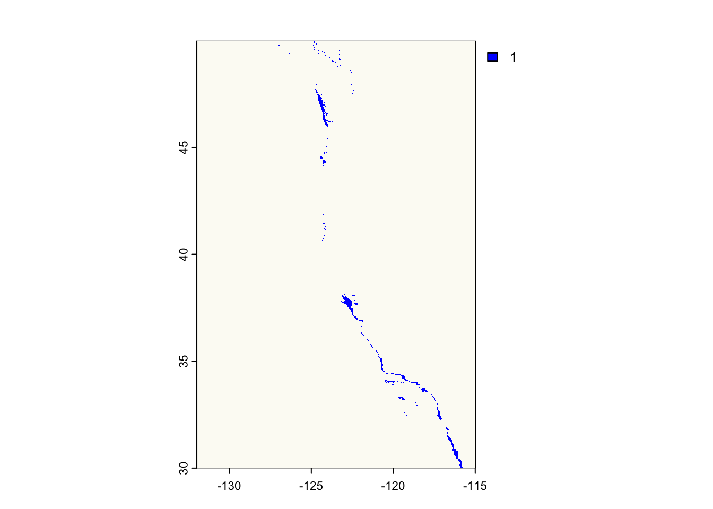
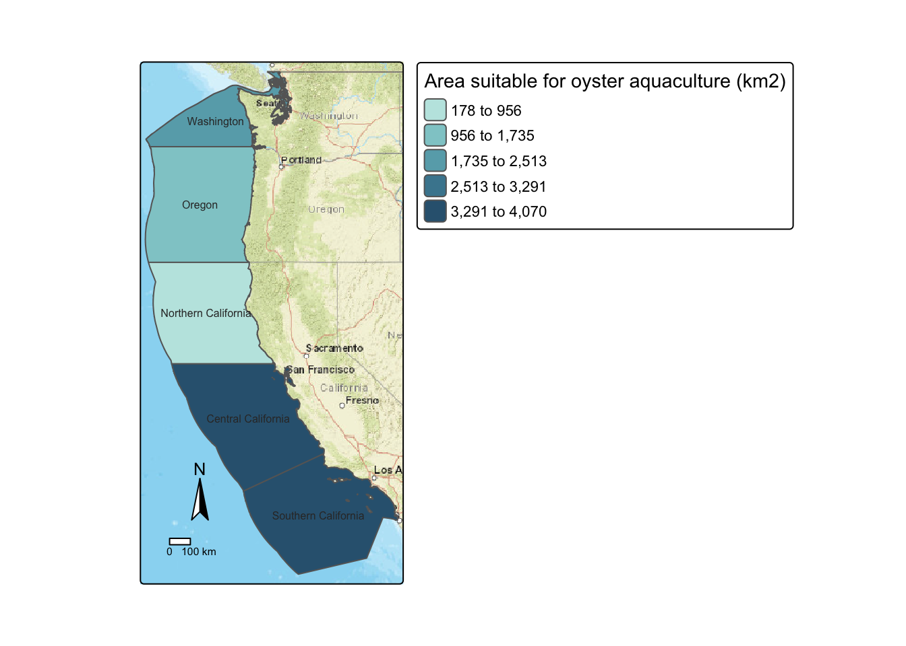
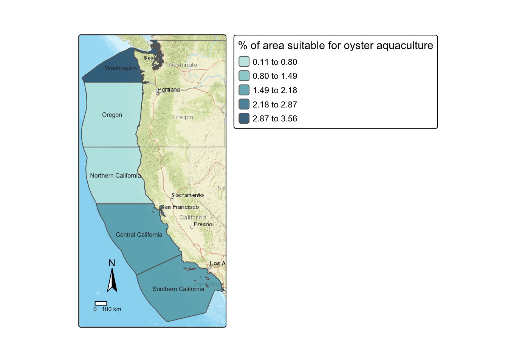
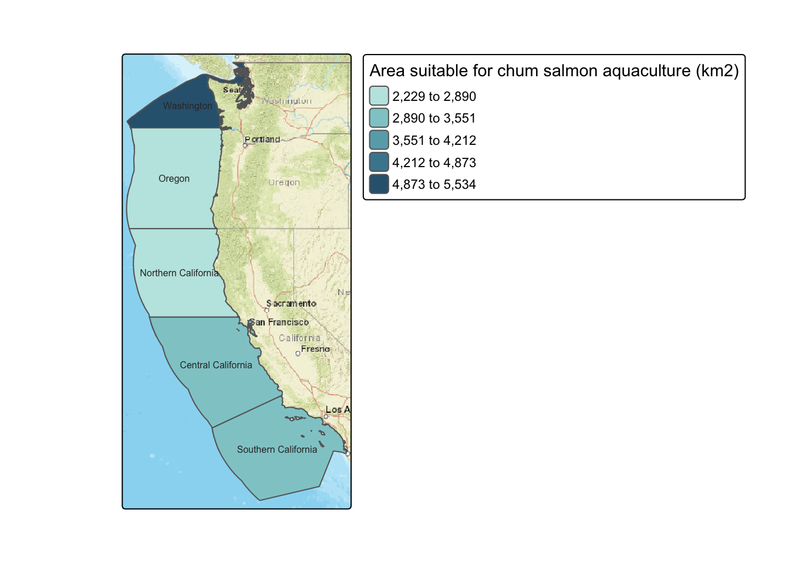
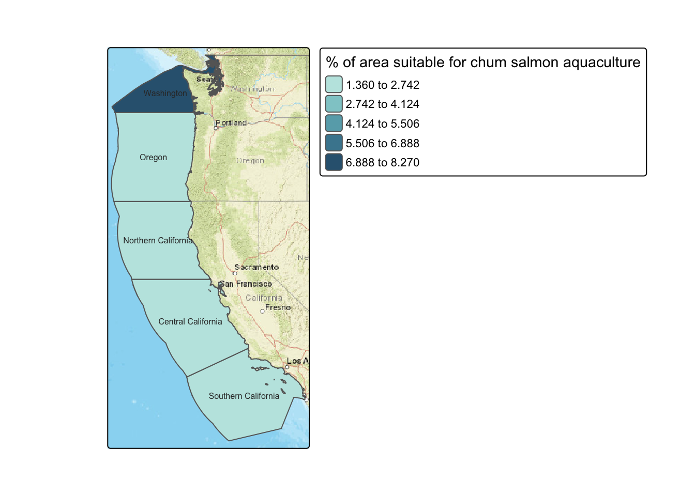

# define function to read in and combine raster files
read_raster <- function(files, layer_names, raster_name) {
raster_name <- rast(files)
names(raster_name) <- c(layer_names)
return(raster_name)
}Overview
Background
“Marine aquaculture refers to the breeding, rearing, and harvesting of aquatic plants and animals. It can take place in the ocean, or on land in tanks and ponds.” [1] It is an important seafood industry around the world and includes both fish and aquatic plants production. According to NOAA Fisheries, “World aquaculture production of fish and plants combined reached 114.5 million tons in live weight in 2019, for an estimated total value of $263.6 billion.” Additionally, with the growing concern of the environmental impacts of meat production, marine aquaculture has the potential to play an important role in the global food supply.
United States, though has a state-of-the art research and areas suitable for aquaculture currently ranks 17th in total aquaculture production [2]. Aquaculture supplies only about 7 percent of the entire U.S. seafood supply, while 70 to 85 percent of seafood is imported from other countries. Almost half of the imported seafood is farmed. Consequently, there is a growing interest in developing marine aquculture domestically.
Objective
- Evaluate the potential for marine aquaculture along the Exclusive Economic Zones (EEZ) on the West Coast of the US, focusing on the following two constraints:
- Water depth
- Sea surface temperatures
- Build a function to aid in the future analysis of the feasibility of the selected areas for marine aquaculture. The analysis is guided by the work of Gentry et al., who mapped the potential for marine aquaculture globally based on multiple constraints, including ship traffic, dissolved oxygen, and bottom depth [3].
Data
The analysis is based on the following three datasets:
- Sea Surface Temperature
Description: The dataset contains average annual sea surface temperature (SST) from the years 2008 to 2012. The data was originally generated from NOAA’s 5km Daily Global Satellite Sea Surface Temperature Anomaly v3.1. [4]
- Bathymetry
Description: The dataset provides the General Bathymetric Chart of the Oceans (GEBCO). [3]
- Exclusive Economic Zones Description: Shapefiles of the Exclusive Economic Zones off the west coast of the US from Marineregions.org.
Approach
I used geospatial data and tools to conduct the analysis, including:
- Combining vector/raster data
- Resampling raster data
- Masking raster data
- Map algebra
- Map visualization
I applied a two-step approach in my analysis:
1. I created a sample workflow to identify Exclusive Economic Zone (EEZ) areas suitable for oyster aquaculture.
2. Second, I created a function to generalize the workflow to other species.
limitations
- The scope of the analysis was limited to two parameters: depth and sea surface temperature;
Analysis
The next few sections provide the steps I applied to complete the analysis. The code is available in the github repository: west_coast_eez_aquaculture
Setup
I used the following libraries throughout the analysis:
Data Preparation
As the first step in the process, I have imported all the datasets required for the analysis. Additionally, I checked the CRS of each dataset and reprojected them to a single CRS. In the initial phase of the data preparation I used EPSG :4326 as a common CRS.
Code
# load shapefile for the West Coast EEZ
wceez = st_read(here("data/wc_regions_clean.shp"))
# load sst raster files
files <- list.files(file.path(file_path),
pattern = "sst_.*.tif$",
full.names = TRUE) # '.*' matches any sequence of characters
layer_names <- c("avg_sst_2008", "avg_sst_2009", "avg_sst_2010", "avg_sst_2011", "avg_sst_2012")
raster_name <- 'sst'
sst <- read_raster(files = files,
layer_names = layer_names,
raster_name = raster_name) %>%
project(crs(wceez))
# load bathymetry raster (depth data)
depth <- rast(file.path(file_path,"/depth.tif"))Data Manipulation: Joining, Subsetting, and Reclassifying
Further, I combined the datasets using spacial subsetting and reclassification functions.
I calculated mean temperature in C for the period of 2008-2012 in C, which was then used in subsequent steps to identify areas with optimal SST for oyster aquafarming.
Code
# calculate the mean SST from 2008-2012
sst_mean <- sst %>%
app(fun = mean) %>%
app(function(x) fun = (x - 273.15)) %>% # convert SST data from Kelvin to Celsius
setNames(c('avg_sst_2008_2012_C')) # rename the layer with mean values for clarity
Important
To combine (or stack) the rasters they have to match in in resolution, extent, and coordinate reference system.
I resampled the resolution of the depth raster to match that of the sst raster using the nearest neighbor approach and then cropped the depth raster to match the extent of the SST raster, as their resolutions and extents were different.
Code
# re-sample the depth data to match the resolution of the SST
depth_rsmpl <- depth %>%
resample(sst_mean, method = "near")
# crop depth raster to match the extent of the SST raster
depth_cropped <- crop(depth_rsmpl, ext(sst_mean)) ### crop to the extent
# stack updated depth raster and sst raster
depth_sst <- c(depth_cropped, sst_mean)Identifying suitable locations
Moving on, I defined the reclassification matrices for the depth and sst rasters according to the optimal conditions for oysters growth. As a reminder, the objective of the first part of the analysis was to identify EEZ along the West Coast that are suitable for oyster aquafarming. Based on previous research, we know that oysters needs the following conditions for optimal growth:
- sea surface temperature: 11-30°C
- depth: 0-70 meters below sea level
Code
# create reclassification matrix for the depth layer
depth_m <- matrix(c(-70, 0, 1,
-Inf, -70, NA,
0, Inf, NA),ncol = 3, byrow = TRUE)
# # create reclassification matrix for the sst layer
sst_m <- matrix(c(11, 30, 1,
-Inf, 11, NA,
30, Inf, NA),ncol = 3, byrow = TRUE)
# reclassify the original raster based into the suitable locations
depth_sst$depth <- classify(depth_sst$depth, depth_m)
depth_sst$avg_sst_2008_2012_C <- classify(depth_sst$avg_sst_2008_2012_C, sst_m)
# find locations that satisfy both SST and depth conditions
locations <- lapp(depth_sst, fun=function(x,y){return(x*y)}) %>%
setNames(c('suitable_locs'))[1] "Total count of raster cells suitable for aquaculture: 896"
Identifying the most suitable areas (with some map algebra)
Using map algebra I calculated the suitable area and the percentage of the total area optimal for oyster aquaculture. This information provides insight into which areas should be prioritized for dedicating resources to marine aquaculture, specifically for oyster farming.
Code
# rasterize wceez variable region based on locations raster
wceez_loc_rgn <- rasterize(wceez, locations, field = 'rgn_id')
# subset wceez_loc_rgn based on the locations raster
wceez_loc_rgn_suitable <- wceez_loc_rgn[locations, drop = FALSE]
# calculate suitable area for oyster farming
total_suitable_area_km2 <- terra::expanse(locations,
unit="km",
transform=TRUE,
zones = wceez_loc_rgn) %>%
rename("rgn_id" = zone,
"suitable_area_km2" = area) %>%
st_drop_geometry() %>%
select('rgn_id','suitable_area_km2')
# join wceez vector data with suitable_loc_df
suitable_loc_df <- full_join(wceez, total_suitable_area_km2, by = 'rgn_id')
# calculate pct of suitable area per region
suitable_loc_df$pct_suitable_area <- (round((suitable_loc_df$suitable_area_km2/
suitable_loc_df$area_km2) * 100, 2))

EEZ function
Finally, I consolidated the above steps in a single function. The function makes it easy to extend the scope of the analysis to other species. The function does the following:
- accepts temperature and depth ranges and species name as inputs
- returns maps of total suitable area and percent suitable area per EEZ with the species name in the title
Code
# accept temperature and depth ranges and species name as inputs
# create maps of total suitable area and
# percent suitable area per EEZ with the species name in the title
species_distribution_map = function(species, polygon,
depth_raster, depth_min, depth_max,
sst_raster, temp_C_min, temp_C_max) {
# create reclassification matrix for the depth raster
depth_m <- matrix(c(depth_min, depth_max, 1,
-Inf, depth_min, NA,
depth_max, Inf, NA),ncol = 3, byrow = TRUE)
# reclassify the original depth raster based into the suitable locations
depth_suitable <- classify(depth_raster, depth_m)
# create reclassification matrix for the sst raster
sst_m <- matrix(c(temp_C_min, temp_C_max, 1,
-Inf, temp_C_min, NA,
temp_C_max, Inf, NA),ncol = 3, byrow = TRUE)
# reclassify the original sst raster based into the suitable locations
sst_suitable <- classify(sst_raster, sst_m)
# calculate species distribution locations
distribution_locations <- depth_suitable * sst_suitable
# get suitable locations for distribution across the regions of interest
id_rast <- rasterize(polygon, distribution_locations, field = 'rgn_id')
mask <- id_rast[distribution_locations, drop = FALSE]
# calculate area of suitable locations raster
suitable_cells_area_km2 <- cellSize(mask,
mask=TRUE,
unit="km",
transform=TRUE)
suitable_area_km2 <- zonal(suitable_cells_area_km2,
mask,
fun = "sum",
na.rm = TRUE) %>%
setNames(c('rgn_id', 'suitable_area_km2'))
# add total suitable area values to the main polygon with regions of interest
suitable_locations_df <- full_join(polygon, suitable_area_km2, by = 'rgn_id')
# calculate percent of suitable area per region
suitable_locations_df$pct_suitable_area <- (round((suitable_locations_df$suitable_area_km2/
suitable_locations_df$area_km2) * 100, 2))
# create a map of total suitable area
m1_title = paste0("Area suitable for ", species, " aquaculture (km2)")
m1 <- tm_basemap(server = "Esri.WorldStreetMap") +
tm_shape(suitable_locations_df) +
tm_polygons("suitable_area_km2",
fill.scale = tm_scale_intervals(values = "Teal", n=5, style = "quantile"),
fill.legend = tm_legend(title = m1_title)) +
tm_text(text = 'rgn', col = '#333333', size = 0.5, nudge_y = 0.1)
tm_compass(position = c("left", "bottom")) +
tm_scalebar(position = c("left", "bottom"), size = 5)
# create a map of total suitable area
m2_title = paste0("% of area suitable for ", species, " aquaculture")
m2 <- tm_basemap(server = "Esri.WorldStreetMap") +
tm_shape(suitable_locations_df) +
tm_polygons("pct_suitable_area",
fill.scale = tm_scale_intervals(values = "Teal", n=5, style = "quantile"),
fill.legend = tm_legend(title = m2_title)) +
tm_text(text = 'rgn', col = '#333333', size = 0.5, nudge_y = 0.1)
tm_compass(position = c("left", "bottom")) +
tm_scalebar(position = c("left", "bottom"), size = 5)
# return list of distribution maps
return(list(suitable_area_map = m1, suitable_pct_map = m2))
}Let’s test the function!
# execute function for species = Oncorhynchus keta (Chum salmon)
# reference: https://www.fishbase.se/summary/241
# depth range 0 - 61 m
# Temperate; 0°C - 24°C
species <- "chum salmon"
loc <- species_distribution_map(species, wceez,
depth_cropped, -61, 0,
sst_mean, 0, 24)
loc$suitable_area_map
$suitable_pct_map
Citations
[1] Fisheries, NOAA. “Understanding Marine Aquaculture | NOAA Fisheries.” NOAA, 29 Dec. 2022, https://www.fisheries.noaa.gov/insight/understanding-marine-aquaculture. National.
[2] FAO, editor. Moving Forward on Food Loss and Waste Reduction. Food and Agriculture Organization of the United Nations, 2019.
[3] Oceans, General Bathymetric Chart of the. “Gridded Bathymetry Data (General Bathymetric Chart of the Oceans).” GEBCO, https://www.gebco.net/data_and_products/gridded_bathymetry_data/. Accessed 14 Dec. 2023.
[4] NOAA Coral Reef Watch Daily 5km Satellite Coral Bleaching Heat Stress SST Anomaly Product (Version 3.1). https://coralreefwatch.noaa.gov/product/5km/index_5km_ssta.php. Accessed 14 Dec. 2023.